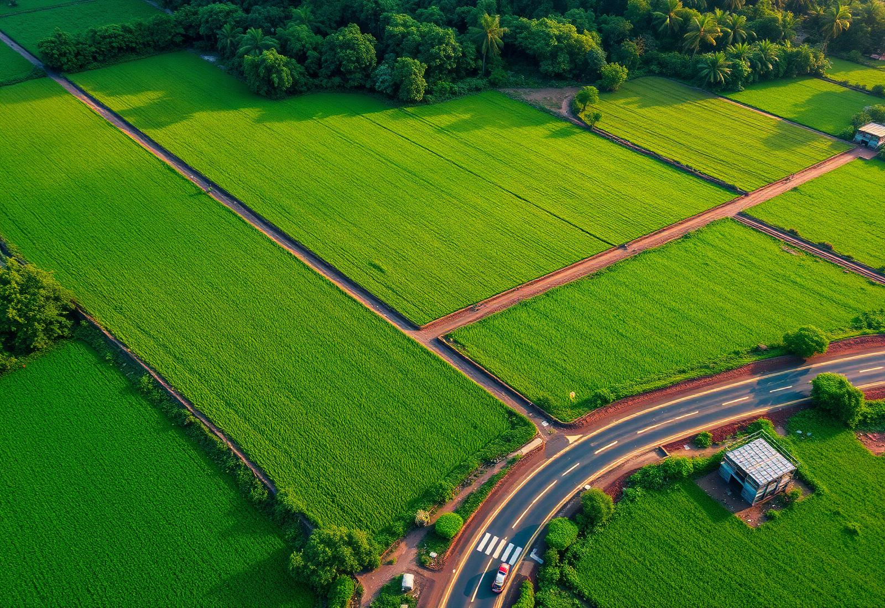
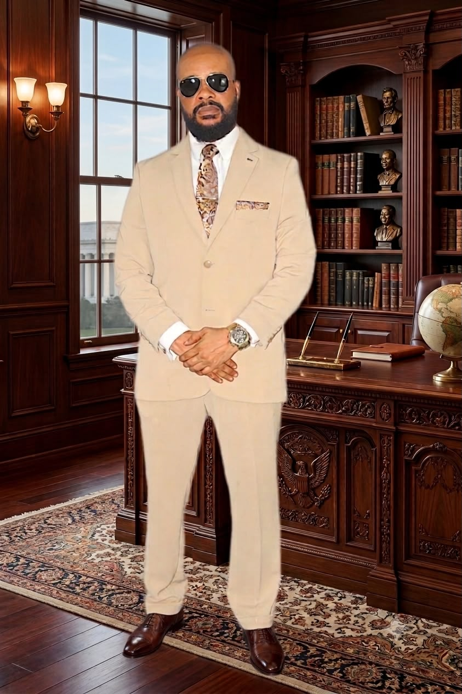

Rebuilding Relationships with God & Fellow Liberians
National Repentance, Truth & Reconciliation 2.0, and healing the tribal fissures that time has left behind.
A movement of — restoring the Love of Liberty in every Liberian through the 7 Cardinal Pillars of a Smart and Green Liberia.
The Liberia Rebuilding Party (LRP) — The REBUILDERS — is a National Movement dedicated to the total transformation of Liberia through spiritual renewal, human capital investment, an industrial economy and 21st-century infrastructure.

We reject the politics of division and personality. We believe our nation's problems are first spiritual and then structural — and that both can be solved by a disciplined, transparent movement of Liberians for Liberians.
Our foundation is the 7 Cardinal Pillars — a comprehensive blueprint touching every sector: from reconciliation and healthcare to Neo-Christopolis, our future smart green capital at the heart of Liberia.
Seven interlocking pillars that will carry Liberia from recovery to renaissance.
National Repentance, Truth & Reconciliation 2.0, and healing the tribal fissures that time has left behind.
TVET in every district, modern hospitals, a 24/7 National Ambulance Service and education engineered for employment.
Agro-industrialization, 'Made in Liberia' manufacturing and Economic Free Zones — from buy-and-sell to make-and-export.
Neo-Christopolis, gold-standard highways, decentralized power, a Smart Airport and a Deep-Water Sea Port.
The Rebuilders Clouds System digitizes government; county Innovation Hubs make Liberia the Silicon Coast of West Africa.
Local languages in every school, national museums restored, 16 tribes woven into one thriving cultural tapestry.
Modern stadiums in all 15 counties, creative zones for music and film, and a rebranded LoneStar national program.
Every color of the Rebuilders flag carries a promise for the nation we are building.
Fertile soil and lush vegetation — our commitment to agricultural revolution and environmental sustainability.
The wealth of our natural resources and the bright, prosperous future we are building — the 'shine' in our motto.
The bravery, determination and resilience required to rebuild a nation, rain or shine.
Peace, stability and the vast potential of our coastal waters — rebuilding needs an atmosphere of tranquility.
Grassroots mobilization from Cape Mount to Maryland — mothers, students, professionals and diaspora hands, together.

Volunteer, join the party, or partner with the movement. Every Liberian has a place in the rebuilding.